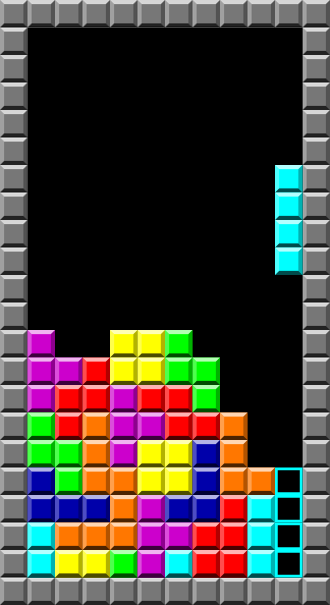

《俄羅斯方塊》（俄語：Тетрис，英語：Tetris），是1980年末期至1990年代初期風靡全世界的電腦遊戲，是落下型益智遊戲的始祖，為蘇聯首個在美國發布的娛樂軟件。
此遊戲最初由阿列克謝·帕基特諾夫在蘇聯設計和編寫，於1984年6月6日首次發布，當時他正在蘇聯科學院電算中心工作。
此遊戲的名稱是由希臘語數字四的前綴“tetra-”（因所有落下方塊皆由四塊組成）和帕基特諾夫最喜歡的運動網球（“tennis”）拼接而成。
此遊戲和其續作可於幾乎所有電子遊戲機和電腦操作系統上游玩，亦可於圖形計算器、手提電話、便攜式媒體播放器、個人數碼助理、互聯網無線電設備上游玩，甚至能以彩蛋的形式在非媒體產品上游玩，如示波器。
此遊戲甚至啟發了《俄羅斯方塊》餐具。甚至在大樓外牆實現了相應的模式。
於1980年代，此遊戲除了成為一個熱門的家用電腦和街機遊戲外，還成為Game Boy史上最受歡迎的遊戲。 《電子遊戲月刊》在2007年將此遊戲列為“最偉大的100個遊戲”中的第1位，並獲IGN列為“最偉大的100個遊戲”中的第2位。
截至2009年，此遊戲已售出逾7000萬套遊戲。於2010年1月，此遊戲於手提電話上已售出逾1億套遊戲。
直到今日，俄羅斯方塊在各平台上以1億7000萬總銷量成為有史以來第二暢銷的電子遊戲，僅次於《我的世界》。
◎參考資料：
w3school
俄羅斯方塊